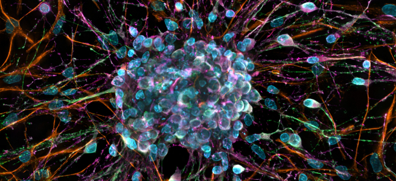

An Imposed Freedom

When asked whether or not he had free will, Christopher Hitchens often responded with a consciously ironic, yet subtly thought-provoking remark: “Yes I have free will; I have no choice but to have it”. He made no strong attempt to answer the question, rather electing to point out the underlying paradox in order to continue on with more important matters.
Sam Harris, on the other hand, (a personal friend and comrade in the battlefield of ideas to Hitch) motivated by his interest in the matter and expertise in the field of neuroscience, wrote a book about the subject, presenting evidence of determinism in our actions and arguing the implications of this observation.
In my consideration of Sam’s arguments, I have found myself agreeing with essentially all points made about the nature of free will. Nevertheless, I feel inclined to express an opinion about one aspect of the presented thoughts, which is not a direct criticism towards any particular point made in the essay, rather an identification of a missing element in the overview of the problem. The element I am referring to is a certain paradox of the discussion of free will.
It seems to me a constant presence in the figurative debate hall is the assumption of both parties’ full autonomy in the matter. In Sam’s book he discusses the benefits of moving to a less free-will centric view of morality and justice, yet in what sense can one speak of conscious change of our society, without presupposing at least some element of individual autonomy of those, who attempt to change it?
If determinism or random quantum actions are the forces at play in the change of society to the better, then in what sense can one think of himself as an ‘actor’ in this stage of events? Surely in this case changes will happen, independent of any ‘human choice variable’. If this is granted, one could think about societal change as baring a resemblance to, for example, the change, resulting from the process of natural selection. It could almost be thought of as a fundamental law of nature that society changes in the way it does. Currently- to a more fair one, more pleasant to live in and more stable.
But as Sam Harris correctly pointed out, intellectual resignation to determinism should not be confused with fatalism, not for the reason that this reaction to the facts is wrong in any sense, but rather impossible to practically maintain.
People, who have studied this issue and come to the same conclusion as Sam, seem not to operate on the assumption that ‘No human has free will’, rather an empirically wrong, but practically forced assumption, that ‘No human has free will, except myself’.
This could be caused by a resulting conflict between our evolutionary incentive to think of ourselves as rational actors and the rational conclusion that we are essentially unable to be that, which we have to think of ourselves as being, in order to come to this conclusion in the first place. I know this is quite a confusing statement, but the purpose of it is to show a circularity, which I can’t help but be aware of in this discussion.
Of course, my thought process here relies on the assumption that it is nearly impossible to act as a normal, functioning humans being, while still constantly being aware of your own lack of free will. On this point I am completely open to criticism and would change my mind if it was shown to me how to live in a passive state of consciousness, and to be aware of your actions, without backwards rationalising them as decisions.
If our consciousness is in fact this machine for backwards rationalising our actions 300 milliseconds or so after deterministic or random processes have decided our actions for us, then from personal experience I can say that it is immensely difficult to not live in contradiction with this fact. At some point we seem forced to put on hold this idea of determinism in order not to trip over our own thoughts and free ourselves from a downwards spiral of madness.
This is why I think many people opt out of concerning themselves with the issue of free will, in a similar manner to Christopher. In fact, almost every scientist I have heard being asked this question tends to respond in either an ironic or dismissive manner, or often both. It is easy to see the immense appeal to this response, serving both as a humorous remark and witty observation on the absurdities of our own thoughts and the paradoxes, which lay among them.
And even though Sam himself is entirely motivated by external forces in his writing and deserves no credit for his thoughts, I also have no choice but to thank him for a great book and show my appreciation for his sustaining the dying art of the public intellectual in what seems to be a time of great difficulty to have controversial opinions.
I recommend the book to anyone, interested in the topic. It’s fairly brief and there’s an audiobook version, wonderfully-narrated by the author himself!
Petar Peychev